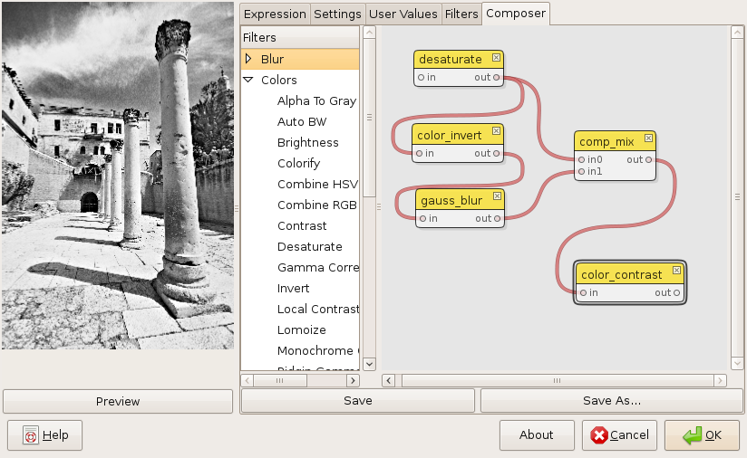
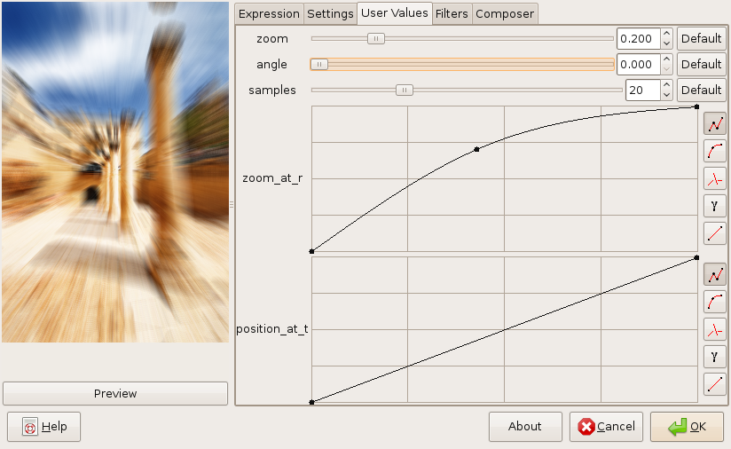
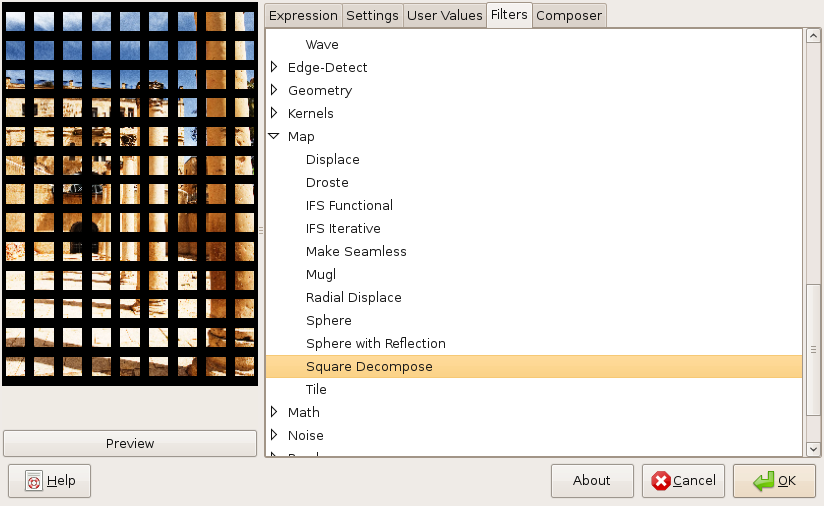
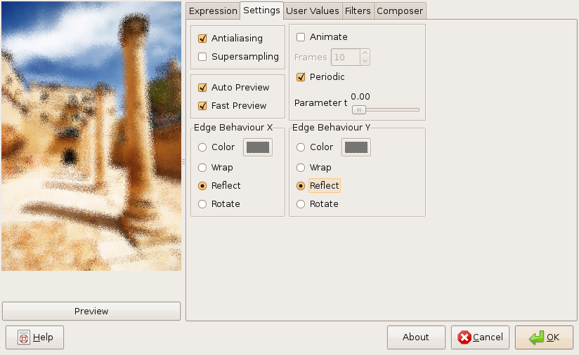

The composer gives you an intuitive graphical user interface for creating new filters by combining existing ones.
Here you can change the input parameters of your filters.
This tab allows you to load your own filters or of the many built-in examples.
Here you can edit filters using the MathMap filter language.
In this tab you can enable antialiasing options, chose whether you want to generate an animation (or set the t parameter if not) and select how the edges of input images behave.